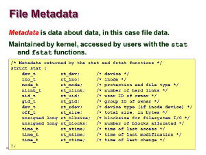
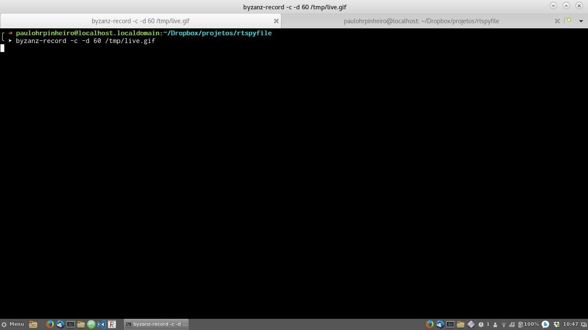

Um tail -f desfalcado
Treinando com C para uma implementação pessoal do tail -f

Como é que o comando tail com a opção -f faz seu serviço?
É algo que não aprendi e resolvi dar uma fuçada. O que quero é saber se um arquivo que tenho aberto em meu programa, recebeu mais dados, especificamente em C.
Achei muito interessante saber que, por exemplo no Linux, mágicas como essa podem ser feitas com a API inotify do Kernel. O que vale também para FreeBSD, e, não pelo Kernel, no OpenBSD.
Com essa API podemos monitorar o que acontece em diretórios (arquivos criados, apagados, alterados). Mas, cada alteração ocorrida, desencadeia um aviso. Cada uma. Como pretendo usar isso para ler arquivos de log, já não me parece uma boa solução.
Enquanto vou pensando, resolvi fazer o básico. Como ficar lendo um arquivo, em C, que pode ser atualizado por outros processos?
Pesquisa aqui e ali, e pegando uma cola no código fonte do tail, e lendo a man page da chamada read, vi que não é tão complicado, é mais uma questão de ir conhecendo melhor o Unix.
Em outras linguagens, como por exemplo Perl, temos isso pronto, com o pacote File::Monitor.
Para esse primeiro passo, nada além do fato de que quando chamamos read ele pode não ler nada (retornar zero bytes lidos) e isso não significa que é um erro, apenas indica que não tem mais nada pra ler, que chegamos ao final do arquivo.
Essa noção de fim de arquivo não se aplica nessas chamadas, que realmente tratam tudo como arquivo, mas para a família f temos o feof, já que para o fread retornar zero bytes pode ser um erro.
Portanto, posso ficar dando read até dar erro ou retornar alguma coisa:
#include <stdio.h>
#include <stdlib.h> /* exit */
#include <unistd.h> /* read/close/sleep */
#include <fcntl.h> /* O_ constants */
#include <string.h> /* memset */
void exit_if_wrong_arguments(int argc, char *argv[]) {
if(argc<2) {
fputs("Please, give-me a filename.", stderr);
exit(EXIT_FAILURE);
}
if(argc>2) {
fputs("Please, give-me ONLY one filename.", stderr);
exit(EXIT_FAILURE);
}
}
int open_file_or_exit(char *filename)
{
int fd;
fd = open(filename, O_RDONLY);
if(-1==fd) {
fprintf(stderr, "Cannot open file [%s].\n", filename);
exit(EXIT_FAILURE);
}
return(fd);
}
int follow_file(int fd)
{
#define BUFFER_LEN 513
char buffer[BUFFER_LEN];
ssize_t bytes_read_len;
while(1) {
memset((void *)buffer, 0, BUFFER_LEN);
bytes_read_len = read(fd, (void *)buffer, BUFFER_LEN-1);
if(-1==bytes_read_len) {
return 0;
}
if(0==bytes_read_len) {
sleep(1);
}
else {
printf(buffer);
}
}
return(1);
}
int main(int argc, char *argv[])
{
int fd, status;
exit_if_wrong_arguments(argc, argv);
fd = open_file_or_exit(argv[1]);
if(!follow_file(fd)) {
fputs("Read file error. Exiting.", stderr);
status = EXIT_FAILURE;
} else {
status = EXIT_SUCCESS;
}
close(fd);
exit(status);
}
Uma rápida explanação.
A função exit_if_wrong_arguments é só uma firula pra saber se tenho a quantidade certa de parâmetros (por enquanto, 1); se não tiver, encerra o programa.
Já a open_file_or_exit tenta abrir o arquivo, retornando o file descriptor se conseguir, caso contrário, encerra o programa.
A a nossa mais importante, follow_file, que fica lendo o arquivo indefinidamente. Se tem o que imprimir, imprime, se der algum erro, cai fora.
E, não pode faltar :), nossa main, que organiza tudo.
Não é muito esperto, mas matou minha curiosidade. Para esse primeiro experimento, sem preocupações maiores, como por exemplo, o arquivo ser renomeado, como acontece no rotacionamento de logs.
Mas tudo isso tem solução, nos próximos capítulos...
Salvando o programa como rtspyfile.c, pode-se compilar com make rtspyfile, ou então, um comando mais metido a besta como gcc -o rtspyfile rtspyfile.c -ansi -pedantic-errors -Werror -O2.
E aqui, uma amostra do programa funcionando:
